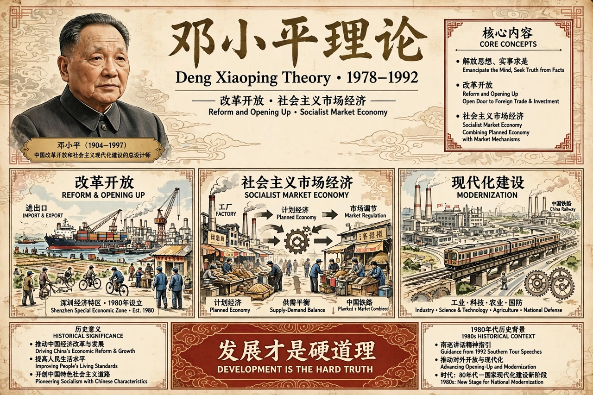

| Deng Xiaoping Theory | |
|---|---|
 | |
| Proponent | Deng Xiaoping |
| Country | China |
| Enshrined in CCP constitution | 1997 (15th Congress) |
Deng Xiaoping Theory (Chinese: 邓小平理论) is the political and economic theory developed by Chinese leader Deng Xiaoping, paramount leader of the People's Republic of China from 1978 to 1989. It forms a core part of the official ideology of the Chinese Communist Party (CCP) and underpinned the reform and opening up that transformed China after Mao Zedong's death.
Deng argued that China was in the primary stage of socialism and that the Party's task was to perfect Chinese socialism by seeking truth from facts, emancipating the mind, and focusing on economic development. The theory justified introducing market mechanisms, foreign investment and private enterprise — summarised as socialism with Chinese characteristics — while retaining one-party rule, state planning in strategic sectors and public ownership as a mainstay. Famous formulations attributed to Deng include "it doesn't matter whether a cat is black or white, as long as it catches mice" and the encouragement to "let some people get rich first."
The ideas emerged from the Third Plenary Session of the 11th Central Committee in December 1978, which launched reform. Special economic zones such as Shenzhen were laboratories for the theory. Deng's 1992 Southern Tour revived market reforms after a conservative retrenchment following 1989. At the 15th Party Congress in 1997, after Deng's death, his theory was written into the Party constitution alongside Marxism-Leninism and Mao Zedong Thought; it entered the state constitution in 1999.
Supporters credit the theory with lifting hundreds of millions out of poverty and making China the world's second-largest economy. Critics debate its relationship to state capitalism, inequality, and whether the market reforms were intended as a stage toward socialism or a pragmatic departure from it. Successor ideologies — Jiang Zemin's Three Represents, Hu Jintao's Scientific Outlook on Development and Xi Jinping Thought — claim continuity with it.